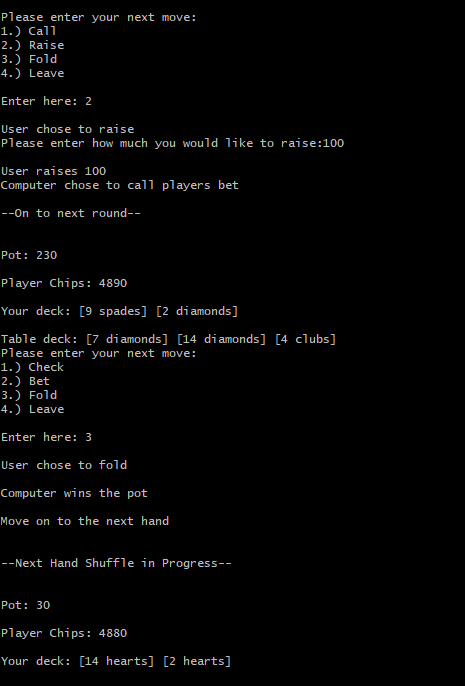
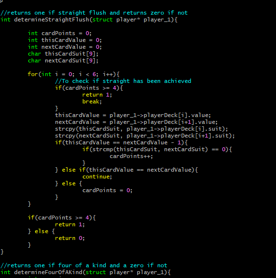

User Experience
Upon running the program, the user will be presented two cards and four choices. The user can then enter 1-4 depending on their choice. An input of 1 indicating a Call/Check, 2 to raise, 3 to fold, and 4 to leave the game and exit the program. If anything else is given as input it will default to a call.

If the user chooses to call or check, the user will put in the pot the designated amount and the game will move onto the next round. If the user chooses to raise they will be prompted to enter the amount they wish to raise. Once an amount is entered the computer AI will make a decision on whether to call the user's raise, to raise the user's raise, or to fold. If the user chooses to fold the computer AI will be given the pot and the game will move onto the next hand.
Once the user has made it to the end of the hand the program will assess who has the best hand and give the pot to whichever player has the won the hand. The game will then move onto the next hand in the same fashion the first began.
How I did it
I started by creating the necessary structures such as a card struct which kept track of the rank and suit of a particular card, a deck struct which stored the 52 cards of a deck in an array data structure, and a player struct which stored an array of the players cards for that hand. I then went on to set up the UI that the player would interact with and a primitive computer AI that the user would play against. This computer AI only had 3 different options no matter the circumstances that was completely random, but I would change this later. Now that I had the foundation down, all I had to do was create a set of functions to determine who won, the computer or the user. I chose to set up a sort of ranking system. For instance, if a player has a pair they're awarded a score of 2, a highcard a score of 1, a two pair a score of 3, and so on until a royal flush which awards the player a score of 10.
All I had to do now was to figure out how to determine whether a player has a particular hand or not. This problem produced some interesting and unique puzzles for me to solve. I had 10 functions in total, for each of the scores, which would either return a 1 (means player has achieved this particular hand being test) or a 0 (failure). Some were certainly easier than others such as determining a pair which just consists of the age old problem of finding a typical pair of some data in an array. Others turned out to be more interesting though such as determining a full house...

...or determining a straight flush.
One of the more fun ones was probably trying to determine the royal flush. This function was too long to get a screenshot of the whole thing but just generally consisted of running a nested loop and checking if the suit of the card held by the outter loop could find a ten, king, queen, jack, and ace of the same suit in the player's deck. A screenshot of the general loop will be pictured below.
I then went on to make a function to determine winner which would take the user's and computer's attributed score given by the previous determine points function, and try to determine who wins the pot. I then suddenly realized that I would have to take into consideration tie breakers which ended up being a lot more work than I initially anticipated. I learned a lot on how to deal with tie breakers in texas hold'em. For instance, I did not know that how you handle a tie breaker when both players have a flush differently than you would with both players having a pair. This function ended up being 600 lines long with over 140 different branch statements, needless to say this project gave me a new found respect for the complexities of texas hold'em.
Once I got this figured out I decided to work on the opponent AI. Playing video games when I was younger, it always fascinated me how the computer opponents could be so seemingly intelligent and good at their job, so I wanted to take a stab at it and try to create the best opponent AI that I could with just using the C programming language. In trying to give the AI a better intelligence in terms of its decision making, I knew I wanted it to be able to assess its cards each round just like a player would, and make decisions with this being a parameter just like a human playing texas hold'em would. Because of the way I implemented the player structures (the player structures hold their personal cards and the table cards, the UI just creates an illusion that this is otherwise), I could not directly use the functions I have used previously to determine the score of the hand because they would return the whole score including the cards that were seemingly still hidden in the deck (yet to be put on the table). To remedy this I tweaked the previous functions to consider the number of the round. Based on this, the functions would only analyze the appropriate cards, thus not giving the AI an unfair advantage.
Now that I have given the AI the function to value its own hand at any particular point in the game in the same way a human would, now I needed to give it the function to make a decision based on this value. The way I determined to do this was to generate a random number between 0 and 100 using the random number generator within C's standard library. This random number would represent the percentage chance the AI made a particular choice on what to do given set of parameters such as the number of the round, the AI's strategy (bluffing or not bluffing), if the user chose to raise and how much they bet, and of course the value of it's hand.
One of the decision trees represented in the code above. Notice how the decision to fold, call, or raise is based on all the parameters listed previously. The number of the round is necessary for the AI to know how many of "its" cards it could look at (not shown here), and also in consideration with risk assessment. An example could be, being more likely to fold if we're in the later rounds and have a weak hand relative to the earlier rounds, this of course if we are not bluffing. The decision for the computer to bluff or not is decided by the parameter compBluff, which has an 80% chance of being 0, which would signify to the AI not to bluff, and vice versa. The decision to bluff inverting the percent chances of a particular decision for the AI to make unless it is to fold (AI will not fold if bluffing). This changed the AI's decision tree from 9 different decisions based on a set of a few parameters, to around 150 different decisions based on a few more parameters.